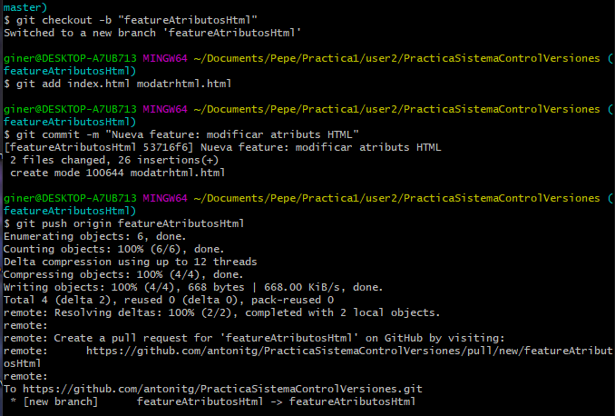

Git es un sistema de control de versions, que permet el treball en equip en projectes tant grans com a xicotets,el servidor es sol allotjar en webs com Github o GitLab encara que tambe el pots allotjar en un vps o en local, el projecte es sol dividir en rames que fan posible el treball paral.lel, sol haber una rama "master" on esta la versió actual del projecte i rames de desenvolupament o test (encara que tota la distribució depen de la metodologia que gastem), a aquestes rames els usuaris pujen els canvis que fan al projecte mitjançant commits que son com actualitzacions del projecte, una bona practica dels commits es fer que cada un es faça per a una millora diferent i no mesclar varies millores en un sol commit. Tot aço pot ser primer treballat en local per a una volta pasar al servidor remot fent un push, encara que cal sempre antes de pujar canvis al servidor remot fer un pull per vore si estas al dia i combinar els canvis
He gastat esta metodologia per que me pareix la que millor se adequa a un projecte xicotet amb millores sobre un projecte no molt separat per moduls

User 1
Primer descarrega la plantilla i la descomprimix en el fitxer on va a crear el repositori git
Ara cree un repositori buit i faig el commit de la estructura creada , afegixc el repositori remoto i faig el primer push
I ja per acabar la primera part del usuari 1 crea la estructura de index i la pagina de home i fa el commit i push
User 2
Primer com a usuari 2 fem un clone del repositori amb "git clone https://github.com/antonitg/PracticaSistemaControlVersiones.git" despres creem una branca nova per a la feature i la desenvolupem
Una volta afegida la feature fem el push de la branca, fem el merge a la branca de master i fem un push tambe de la branca master
Ara fem la segona feature seguint els mateixos passos que la primera canvi de branca, commit i pull de la nova feature
I igual que antes fem el merge a la branca de master i la pujem al repositori remot
User 3
El usuari 3 copiant el que ha fet el usuari 2 fara un git clone i es creara una branca propia on fer la feature, fer el commit i pujar la rama al repositori remot
Despres de pujarla solas ha de fer el merge contra la rama master i pujar aquesta tambe al repositori remot
User 1 - Tag i rama test El usuari 1 fa un pull de la rama master per a trindre la informació actualitzada, despres fa un tag de la versió v1.0 i el puja al servidor, al acabar tambe crea la rama test i la puja al servidor
User 1 - Hooks
Hook eslint
El tema de instalar el eslint ha sigut en el que mes temps he estat de la practica al final va i he instalat el eslint cli i el eslint plugin html, he fet el eslint --init i li he dit que volia comprovar i trobar problemes en els fitxers, quan ha creat el fitxer de configuració li he ficat "modules":["html"], he tardat molt en instalar-lo el he borrat i reinstalt moltes vegades tant el eslint ocm eslinter i altres mes no tinc captures de tot el proces (per que estat tant de rato que ja no estava documentant res per que no sabia si funcionaria o no) pero si es pot vorer com funciona i tambe pujare la carpeta de configuració i el package.json al gh
En aquest he gastat el eslint per a vore els errors, si els errors que retorna tenen 0 caracters es que no hi han i seguixc la execucio normal, si en canvi tenen mes de 0 caraacters entonces pare el commit i mostre els errors per pantalla, ho he fet amb el pre-commit i esta junt amb el hook dels caracters especials
CodiHook caracters especials
En aquest he fet dos bucles for anidats, en un recorrec tots els fitxers que van a ser afegits en el commit i en el altre comprova tots els caractes especials, si troba algun caracter esepecial ho afegix a la llista de errors i no deixa fer el commit, al final de tot mostra tots els caracters especials que hi han i en quin fitxer estan, ho he fet amb el pre commit i esta junt amb el hook del eslint
Hook Missatge
Este hook es el mes senzill de tots simplement mire que el missatge tinga els dos camps que demana i si algun dels dos no esta mostre un error i pare el commit, el he fet en msg-commit
Hook node_modules
Este hook tambe es molt senzill sols fa falta borrar la carpeta node_modules i fer un npm install, ho he fet amb un post-checkout
Una volta he fet els hooks els he provat i al funcionar els he ficat a la carpeta gitHooks i he fet un push